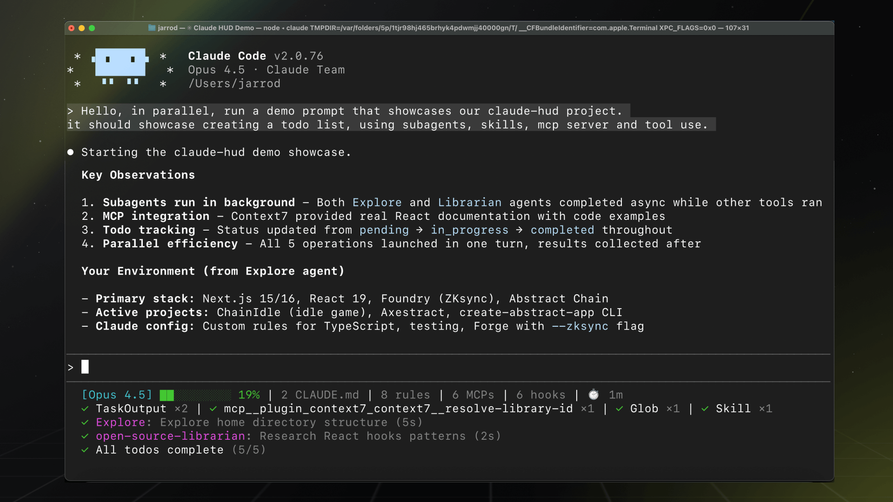

概述
Claude HUD 是 Claude Code 的状态栏插件，可在输入提示符正下方实时显示会话信息。它展示上下文窗口用量、活动工具、运行中的 Agent 以及待办进度——让你全面了解 Claude 正在做什么以及还剩多少容量。

为什么选择 Claude HUD
使用 Claude Code 时，默认情况下你是在盲飞。你不知道上下文窗口已经用了多少，直到 Claude 告诉你快用完了。你看不到哪些工具正在被调用，也不知道某个子 Agent 是否还在运行。Claude HUD 通过将会话状态呈现为一个持久且始终可见的状态栏来解决这个问题。
核心优势：
- 避免上下文溢出——实时观察上下文用量的增长，在达到上限前及时采取措施
- 了解工具活动——准确查看 Claude 正在读取、编辑或搜索哪些文件
- 跟踪 Agent 进度——了解子 Agent 何时在运行以及它们正在处理什么
- 监控任务完成情况——在 Claude 执行你的检查清单时跟踪待办进度
- 关注速率限制——查看你的用量配额消耗情况（Pro/Max/Team 计划）
显示内容
Claude HUD 在输入提示符下方最多渲染四行内容。前两行始终可见；其余行在检测到相关活动时才会出现。
第 1 行：会话信息
[Opus | Max] │ my-project git:(main*)
这一行显示：
- 模型名称——当前活动的 Claude 模型（Opus、Sonnet、Haiku）
- 计划名称——你的订阅等级（Pro、Max、Team）或 AWS 用户显示
Bedrock - 项目路径——当前工作目录（可配置为 1 到 3 层深度）
- Git 分支——当前分支名称，可选显示脏标记（
*）、领先/落后计数和文件统计
第 2 行：上下文与用量
Context █████░░░░░ 45% │ Usage ██░░░░░░░░ 25% (1h 30m / 5h)
上下文进度条使用颜色编码来指示健康状态：
| 上下文水平 | 颜色 | 含义 |
|---|---|---|
| 0–70% | 绿色 | 健康——空间充裕 |
| 70–85% | 黄色 | 警告——建议收尾或压缩上下文 |
| 85%+ | 红色 | 危险——自动显示 Token 详细分布 |
用量条（右侧）显示当前计费周期的速率限制消耗情况。当 7 天滚动用量超过配置阈值（默认：80%）时会自动显示。
第 3 行：工具活动（可选）
◐ Edit: auth.ts | ✓ Read ×3 | ✓ Grep ×2
显示正在运行的工具（带旋转图标 ◐）和已完成的工具（带对勾 ✓）。当同一类型的工具被多次调用时，会按类型聚合并显示计数。
第 4 行：Agent 状态（可选）
◐ explore [haiku]: Finding auth code (2m 15s)
显示活动的子 Agent 及其类型、分配的模型、描述和已用时间。当 Claude 将工作委派给子任务时，Agent 信息会出现。
第 5 行：待办进度（可选）
▸ Fix authentication bug (2/5)
跟踪 Claude 待办列表中当前正在进行的任务，并显示完成计数（已完成/总数）。
工作原理
Claude HUD 使用 Claude Code 原生的状态栏 API——无需单独的终端窗口、无需 tmux、无需分屏。它作为插件运行，Claude Code 大约每 300 毫秒调用一次。
Claude Code → stdin (JSON) → claude-hud → stdout → 终端状态栏
↘ transcript (JSONL) → 工具/Agent/待办解析
该插件从两个数据源获取信息：
- stdin JSON——Claude Code 直接传递模型信息、Token 计数和上下文窗口大小。这些数据是原生且准确的（非估算值）。
- Transcript JSONL——Claude HUD 读取会话记录文件以提取工具使用、Agent 活动和待办状态。它通过 ID 将
tool_use块与tool_result块进行匹配，以确定运行中和已完成的状态。
此外，Claude HUD 还会读取配置文件（~/.claude/settings.json、CLAUDE.md 文件、.mcp.json）以统计规则、MCP 服务器和钩子的数量（需启用配置计数显示）。
快速开始
在 Claude Code 会话中执行三条命令即可启动 Claude HUD：
第 1 步：添加市场源
/plugin marketplace add jarrodwatts/claude-hud
第 2 步：安装插件
/plugin install claude-hud
Linux 用户：如果遇到
EXDEV: cross-device link not permitted错误，请在启动 Claude Code 前设置 TMPDIR：mkdir -p ~/.cache/tmp && TMPDIR=~/.cache/tmp claude然后在该会话中运行安装命令。这是一个已知的 Claude Code 平台限制。
第 3 步：配置状态栏
/claude-hud:setup
HUD 会立即显示——无需重启。
配置概览
Claude HUD 提供三种预设方案以适应不同偏好：
| 预设 | 显示内容 |
|---|---|
| Full | 全部显示——工具、Agent、待办、Git、用量、持续时间 |
| Essential | 活动行 + Git 状态，信息精简 |
| Minimal | 仅核心——模型名称和上下文进度条 |
随时运行 /claude-hud:configure 即可切换预设或单独开关各显示元素。如需自定义颜色和阈值等高级设置，请直接编辑配置文件 ~/.claude/plugins/claude-hud/config.json。
完整选项参考请参阅配置指南。
显示格式
项目路径支持多种深度级别：
1 层（默认）： [Opus] │ my-project git:(main)
2 层： [Opus] │ apps/my-project git:(main)
3 层： [Opus] │ dev/apps/my-project git:(main)
Git 状态指示符提供额外的上下文信息：
脏标记： [Opus] │ my-project git:(main*)
领先/落后： [Opus] │ my-project git:(main ↑2 ↓1)
文件统计： [Opus] │ my-project git:(main* !3 +1 ?2)
文件统计符号：! = 已修改，+ = 已暂存，✘ = 已删除，? = 未跟踪。计数为零时省略。
上下文显示选项
上下文值支持三种显示格式：
| 格式 | 示例 | 说明 |
|---|---|---|
percent |
45% |
已使用的上下文百分比 |
tokens |
45k/200k |
当前 Token 数 / 最大 Token 数 |
remaining |
55% |
剩余上下文百分比 |
当上下文使用率较高（85%+）时，会自动显示 Token 详细分布，展示输入与缓存 Token 的分配情况。
用量限制
Claude Pro、Max 和 Team 订阅用户默认启用用量显示。它会在上下文进度条旁边显示你的速率限制消耗情况：
Context █████░░░░░ 45% │ Usage ██░░░░░░░░ 25% (1h 30m / 5h) | ██████████ 85% (2d / 7d)
当消耗量超过配置阈值（默认：80%）时，会显示 7 天滚动用量。
要求：
- Claude Pro、Max 或 Team 订阅（API 专用用户不可用）
- 来自 Claude Code 的 OAuth 凭证（登录时自动创建）
API 用户和 AWS Bedrock 用户不会看到用量限制，因为它们采用不同的计费模式。
系统要求
- Claude Code v1.0.80 或更高版本
- Node.js 18+ 或 Bun